专题11 一元一次方程压轴应用题方案问题
（门票加工租金施工运输进货6种类型36道）

考点01 购买方案问题
考点02 加工方案问题
考点03 租金方案问题
考点04 施工方案问题
考点05 运输方案问题
考点06 进货方案问题

考点01 购买方案问题
1．国庆假期期间，七（1）班的明明、丽丽等同学随家长一同到进士文化园游玩，如下图所示的是购买门票时，明明与他爸爸的对话．试根据图中的信息．

解答下列问题：
(1)明明他们一共去了几个成人和几个学生？
(2)请你帮助明明算一算，用哪种购票方式更省钱？请说明理由．
(3)购完票后，明明发现七（2）班的小涛等7名同学和他们的家长也来购票．若家长人数不超过6，则怎样购票更省钱？
【答案】(1)一共去了6个成人和4个学生
(2)购买团体票更省钱，理由见解析
(3)当家长人数小于等于4时，买成人票和学生票更省钱；当家长人数大于4且小于等于6时，买团体票更省钱．
【分析】本题考查一元一次方程的应用，解题的关键是读懂题意，找到等量关系列出方程．
（1）设一共去了x个成人，则去了
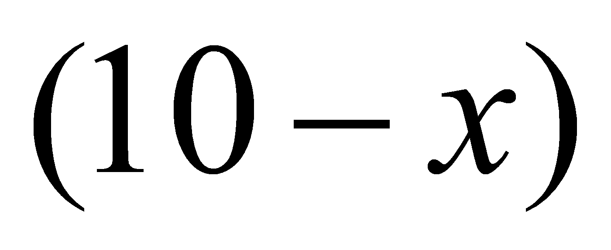
个学生，根据总价=单价×数量，即可得出关于 的一元一次方程，解之即可得出结论；
的一元一次方程，解之即可得出结论；（2）先求出购买 张团体票的钱数，再与
张团体票的钱数，再与
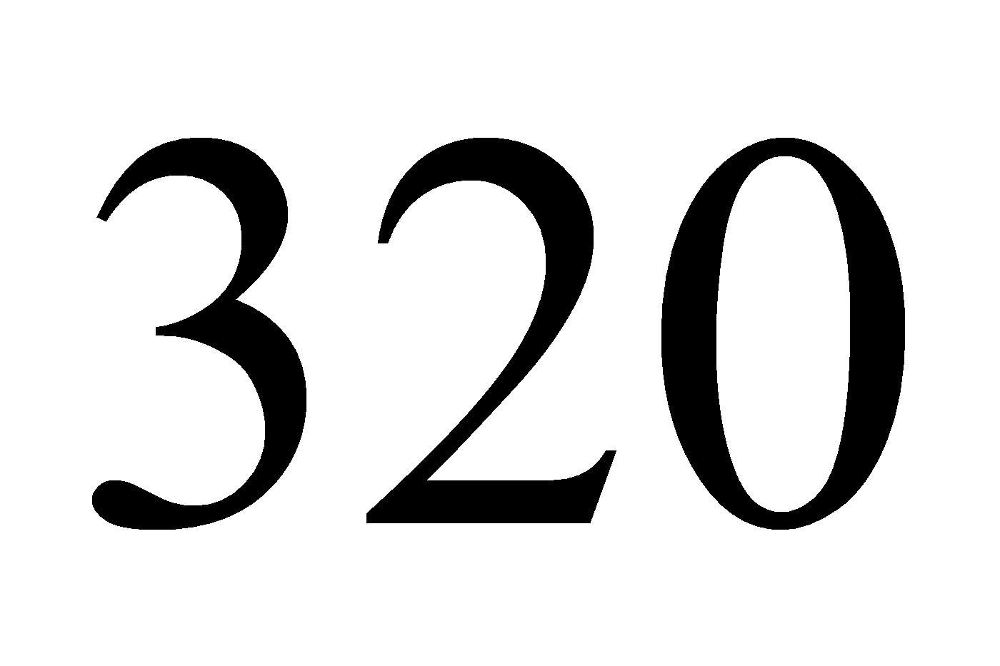
比较后即可得出结论；（3）由题意可知，总人数不超过，所以由（2）可知，买团体票需要
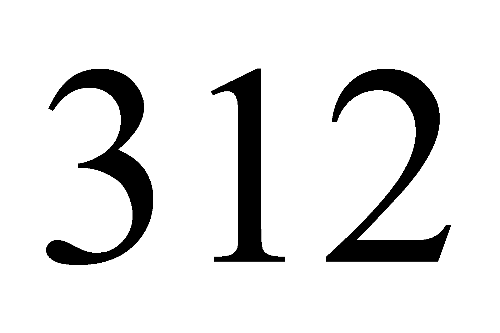
元，求出家长的人数再进行判断即可．【详解】（1）解：设一共去了x个成人，则去了个学生．
由题意，得
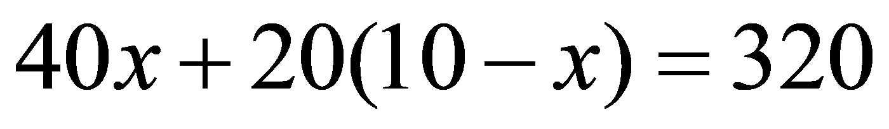
，解得 ，则
，则 （个）．
（个）．
故一共去了6个成人和4个学生，
（2）解：如果买团体票，按13人计算，共需要费用
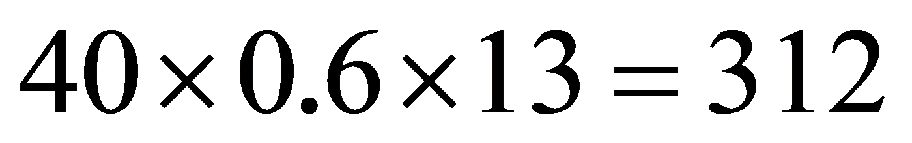
（元）．因为
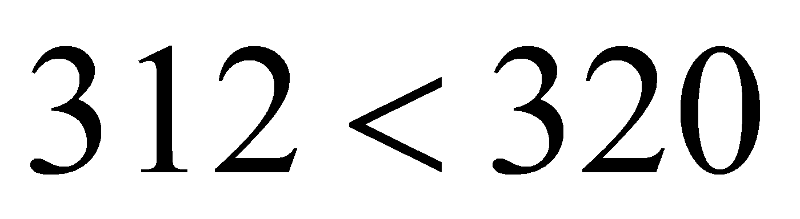
，所以购买团体票更省钱，
（3）解：由题意可知，总人数不超过13，
所以由（2）可知，买团体票需要312元．
设家长有a名．令
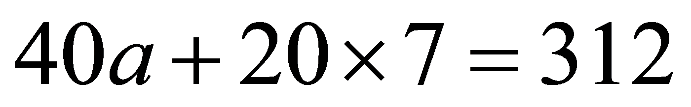
，解得
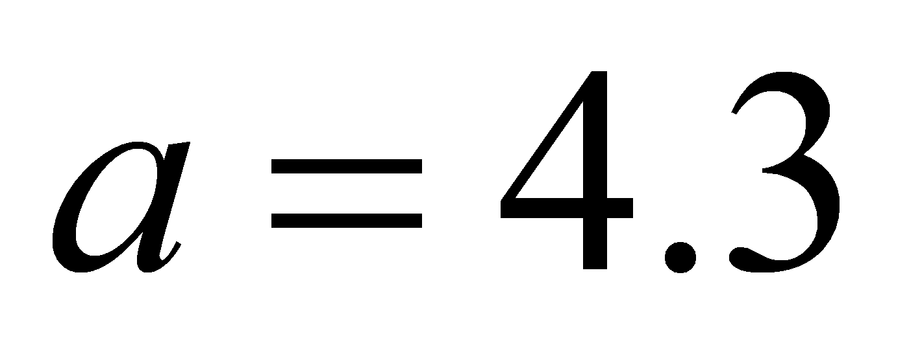
．故当家长人数小于等于4时，买成人票和学生票更省钱；
当家长人数大于4且小于等于6时，买团体票更省钱．
2．北京某景区，门票价格规定如下表：某校七年级（1）、（2）两个班共
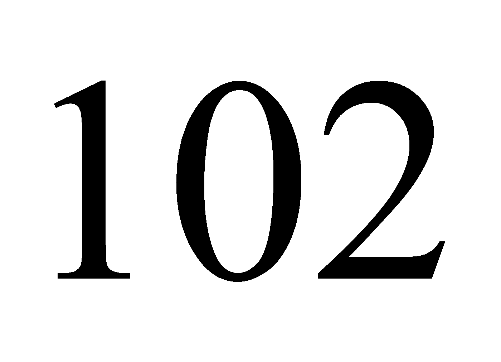
人去该景区游玩，其中（1）班人数多于（2）班人数，且（1）班人数不足 人，如果两个班分别以班为单位单独购买门票，一共应付
人，如果两个班分别以班为单位单独购买门票，一共应付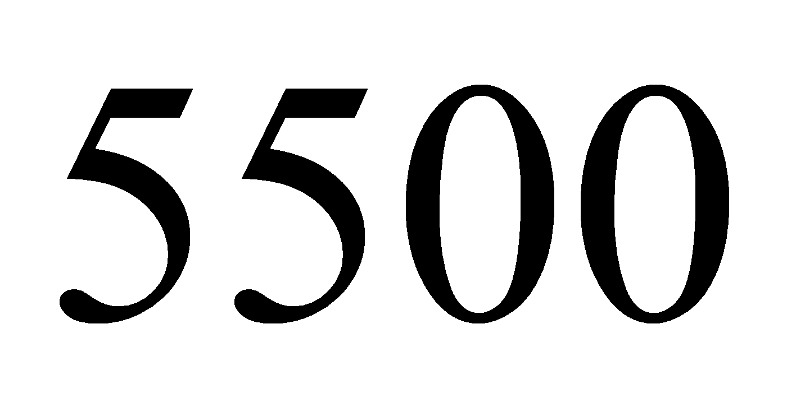
元．购票张数 | 1～50张（包含50张） | 50～100张（不包含50张） | 100张以上 |
每张票的价格 | 60元 | 50元 | 40元 |
(1)去该景区游玩的七年级（1）班和（2）班各有多少学生？
(2)如果七年级（1）班有12名学生因需参加学校竞赛不能外出游玩，（2）班学生可以全员参加游玩，作为组织者，你有几种购票方案？通过比较，你该如何购票才能最省钱？
【答案】(1)七年级（1）班有62人，（2）班有40人
(2)七年级（1）班和（2）班应该联合起来一次购买101张门票最省钱
【分析】（1）设七年级（1）班有学生x人，则七年级（2）班有学生
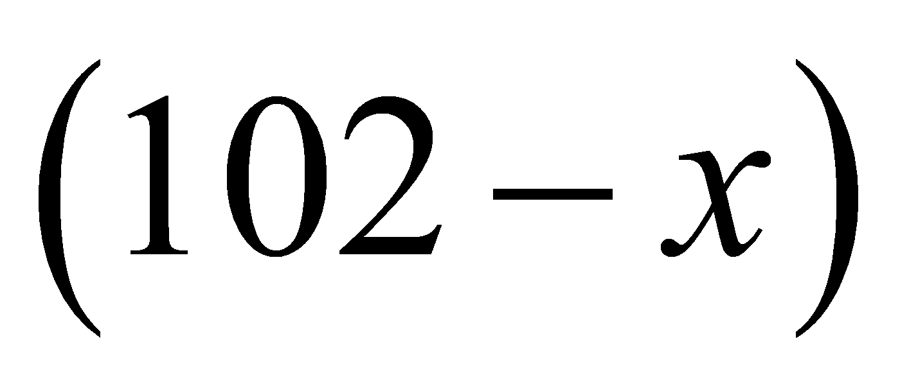
人，因为其中（1）班人数多于（2）班人数，所以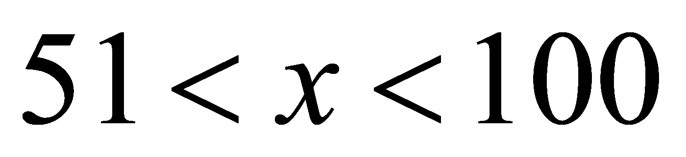
，则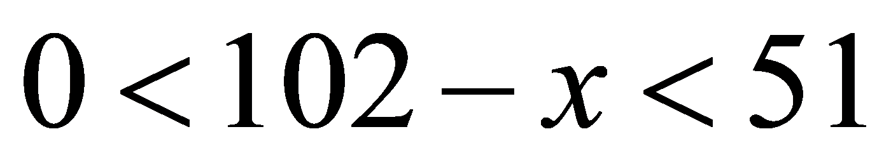
， 利用单独购买门票，一共应付元列方程，解方程即可；（2）分别计算各自购买门票、联合购买门票、联合购买 张门票三种方案的费用，比较后即可得到答案；
张门票三种方案的费用，比较后即可得到答案；
本题考查的是一元一次方程的应用：方案选择问题，解题的关键是读懂题意，利用隐含条件找出等量关系列方程．
【详解】（1）解：设去该景区游玩的七年级（1）班有x人，（2）班有人．根据题意，得
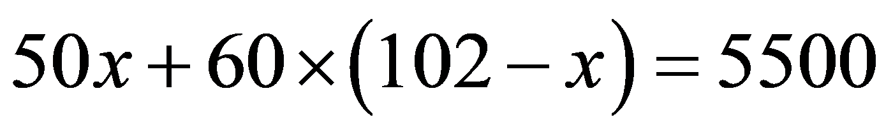
解得
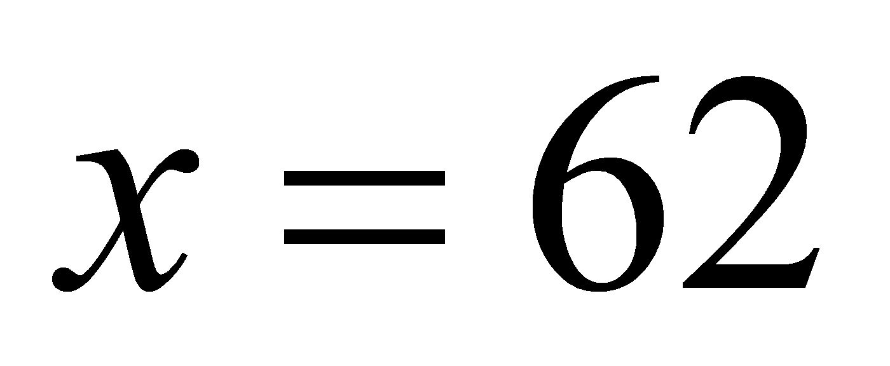
．则（2）班人数为：
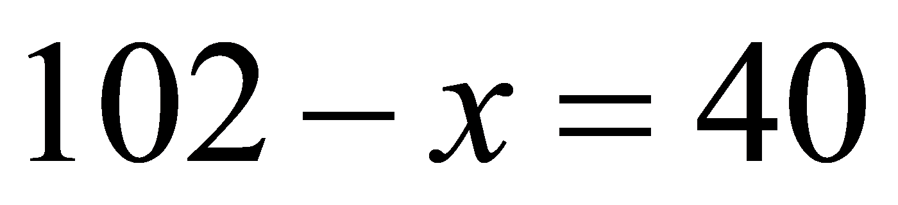
（人）．答：七年级（1）班有62人，（2）班有40人．
（2）解：方案一：各自购买门票需
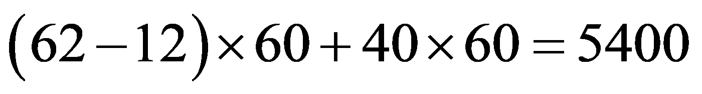
（元）；方案二：联合购买门票需
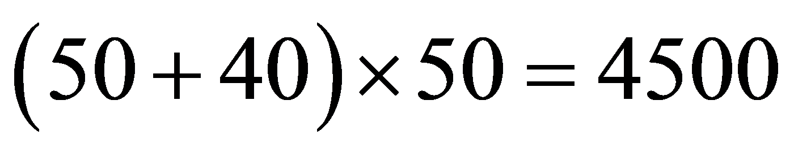
（元）；方案三：联合购买张门票需
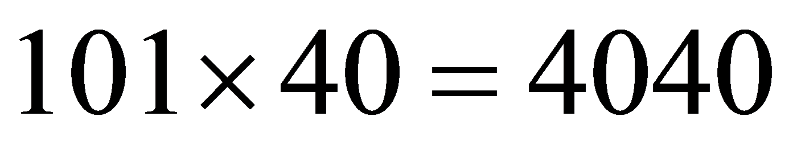
（元）；综上所述：因为
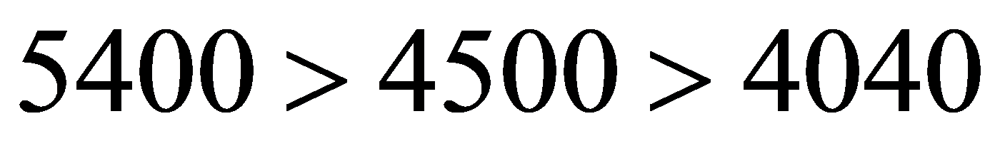
．答：七年级（1）班和（2）班应该联合起来一次购买张门票最省钱．
3．为进一步加强学生“学党史、知党情、跟党走”的信心，培养学生的民族精神和爱国主义情怀，某学校组织开展以“观看红色电影，点燃红色初心”为主题的教育活动．电影票价格表如下：
购票张数 | 1至40 | 41至80 | 80以上 |
每张票的价格 | 20元 | 18元 | 免2张门票，其余每张17元 |
该校七年级两个班共有83名学生去看电影，其中七（1）班的学生人数超过30，但不足40．
(1)如果两个班都以班为单位单独购票，一共付了1572元．求七（2）班学生的人数；
(2)在（1）所得的班级学生人数下，如果七（1）班有7名学生因有比赛任务不能参加这次活动，请你为两个班级设计购买电影票的方案，并指出最省钱的方案．
【答案】(1)七（2）班有44人；
(2)够买81张票最省钱．
【分析】本题主要考查了一元一次方程的实际应用．
（1）根据电影票价格表中的购票方式和价格，列出方程求解即可；
（2）根据题意进行分类讨论：当购买76张票时，当购买81张票时，然后进行比较即可．
【详解】（1）解：∵
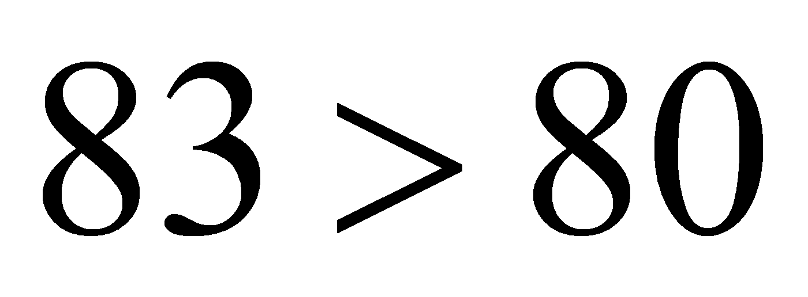
，∴如果两个班联合起来作为一个团体购票，应付
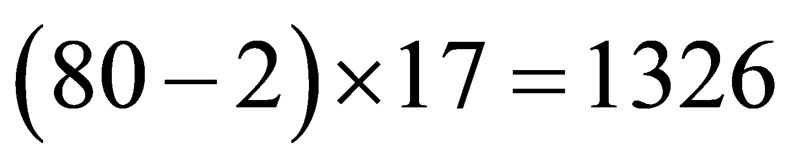
（元），设七（2）班有a人，
∴七（1）班有
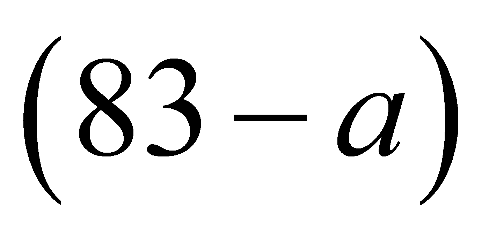
人，∵
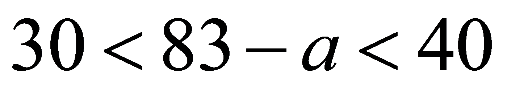
，∴
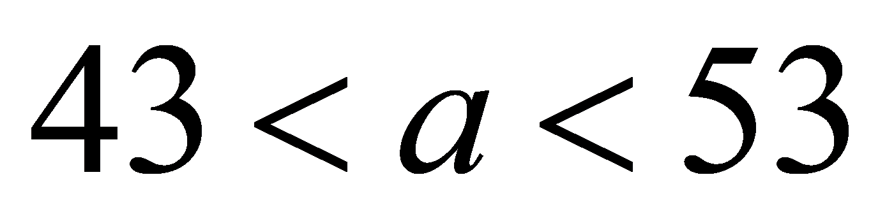
，∴七（1）班应付：
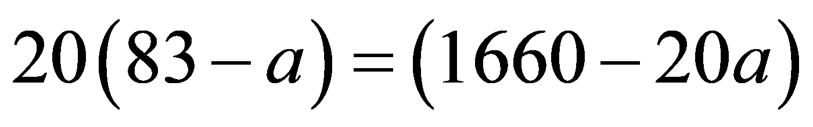
元，七（2）班应付：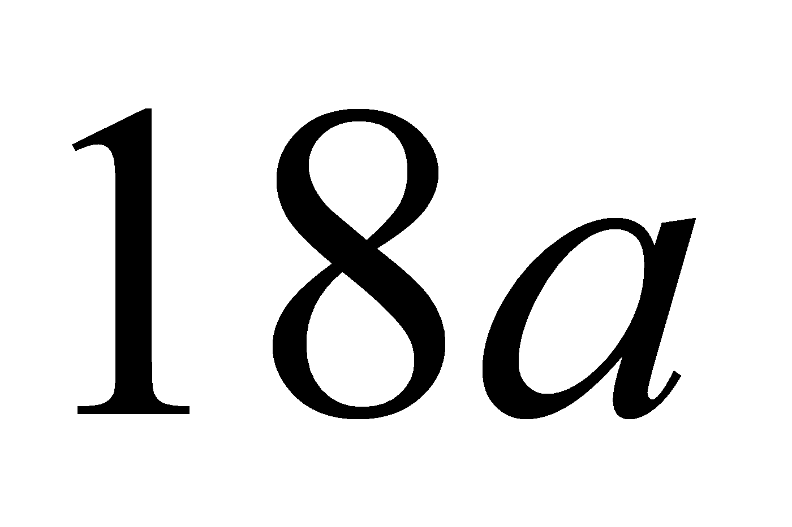
元∴如果两个班都以班级为单位购票，一共应付
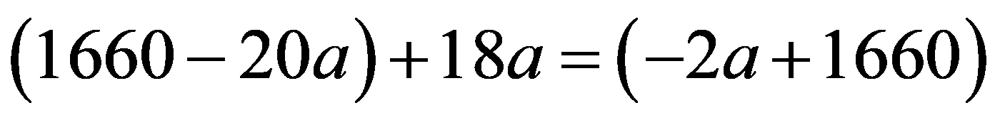
元，∴
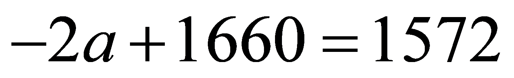
，解得：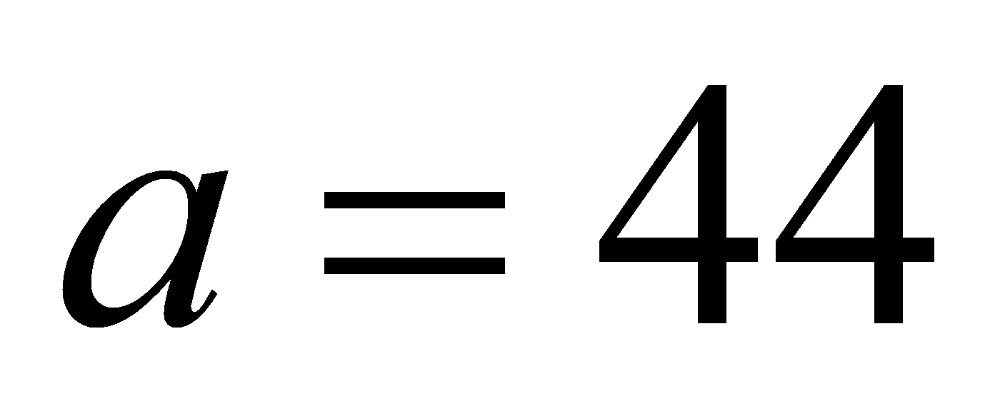
，答：七（2）班有44人；
（2）解：∵，
∴
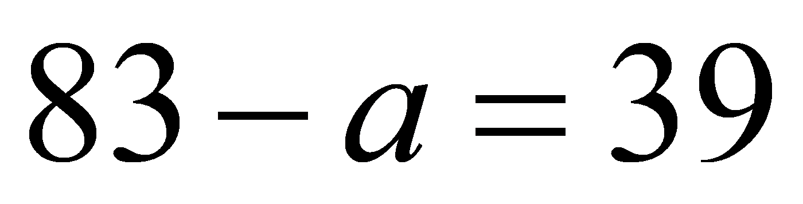
，即七（1）班有39人，∵七（1）班有7名学生因有比赛任务不能参加这次活动，
∴总人数为
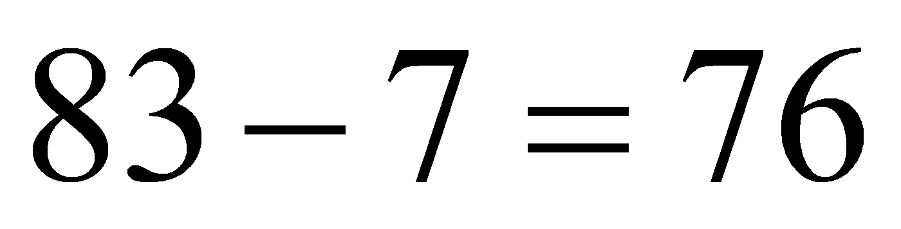
人，当购买76张票时：
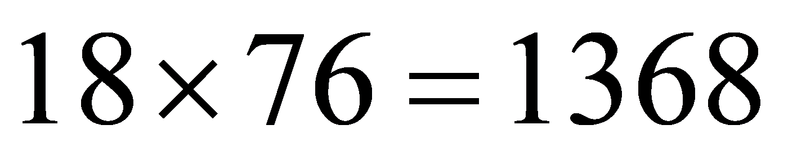
（元），当购买81张票时：
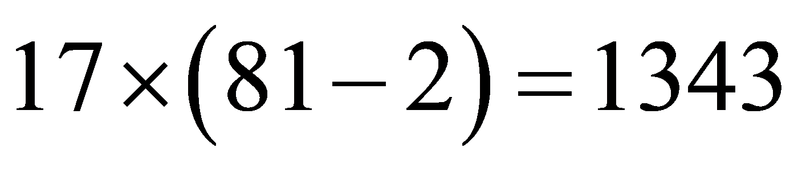
（元），∵
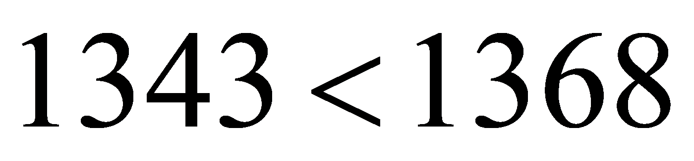
，∴够买81张票最省钱．
4．某景区，门票价格规定如下表：
购票张数 | 1~50张（含50张） | 50~100张（不含50张） | 100张以上 |
每张票的价格 | 60元 | 50元 | 40元 |
某校七年级（1）、（2）两个班共101人去该景区游玩，其中（1）班人数多于（2）班人数，且（1）班人数不足100人，如果两个班分别以班为单位单独购买门票，一共应付5450元．
(1)去该景区游玩的七年级（1）班和（2）班各有多少学生？
(2)如果七年级（1）班有10名学生因需参加学校竞赛不能外出游玩，（2）班学生可以全员参加游玩，作为组织者，你有几种购票方案？通过比较，你该如何购票才能最省钱？
【答案】(1)七年级（1）班有61名学生，（2）班有40名学生
(2)有3种购票方案，七年级（1）班和（2）班联合购买门票101张才能最省钱．
【分析】（1）设七年级（1）班有x人，则七年级（2）班有
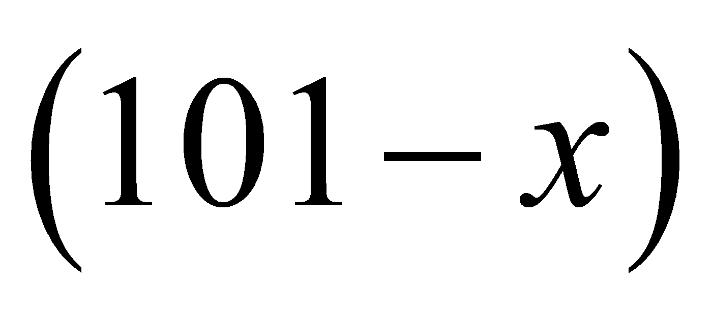
人，分情况列方程求解即可；（2）由题意得有3种购票方案，分别求出所需要费用，即可得出结论．
【详解】（1）解：设七年级（1）班有x人，则七年级（2）班有人，
∵（1）、（2）两个班共101人去该景区游玩，其中（1）班人数多于（2）班人数，
当
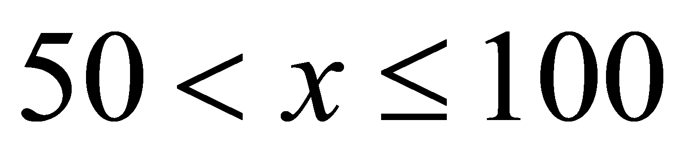
时，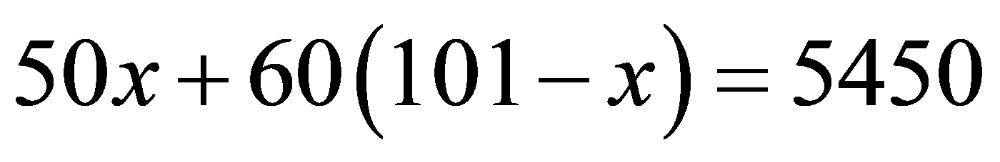
，解得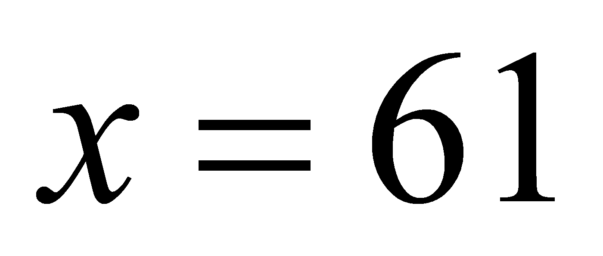
；当 时，
时，
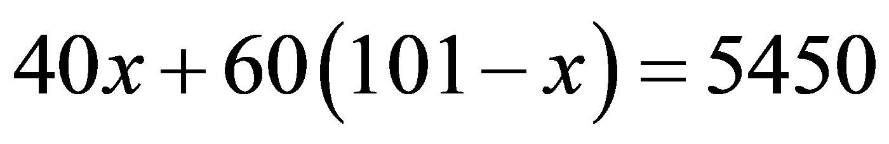
，解得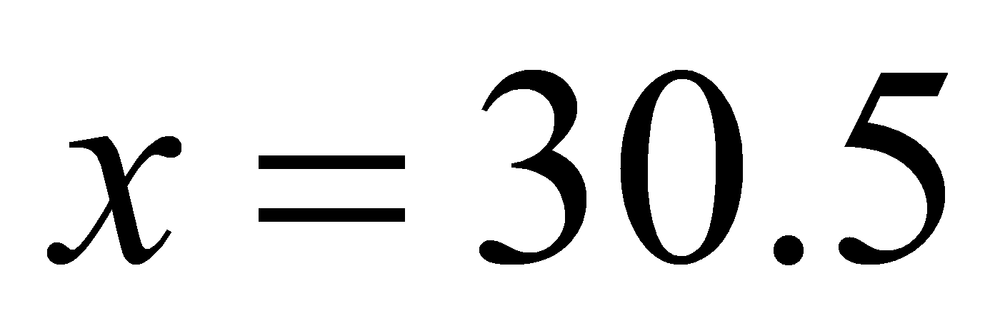
（舍去），答：七年级（1）班有61名学生，（2）班有40名学生；
（2）有3种购票方案：
①七年级（1）班和（2）班单独购买门票，费用为
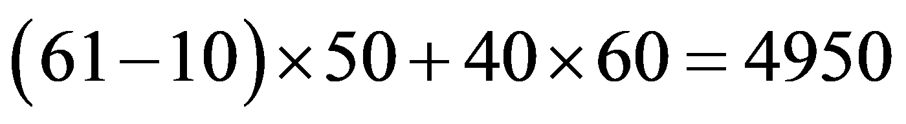
（元）；②七年级（1）班和（2）班联合购买门票，费用为
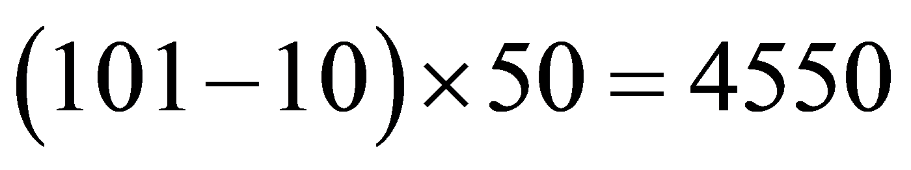
（元）；③七年级（1）班和（2）班联合购买门票101张，费用为 （元）；
（元）；
∵
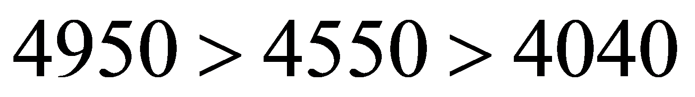
，∴七年级（1）班和（2）班联合购买门票101张才能最省钱．
【点睛】此题考查了一元一次方程的应用，正确理解题意列得一元一次方程是解题的关键．
5．2021年冬季即将来临，德强学校准备组织七年级学生参观冰雪大世界，参观门票学生票价为160元，冰雪大世界经营方为学校推出两种优惠方案，方案一：“所有学生门票一律九折”；方案二：“如果学生人数超过100人，则超出的部分打八折”．
(1)求参观学生为多少人时，两种方案费用一样．
(2)我校七年级共有240名学生参观冰雪大世界，学校采用哪种优惠方案购买门票更省钱？
【答案】(1)200
(2)采用方案二优惠方案购买门票更省钱
【分析】（1）可设参观学生为x人时，两种方案费用一样，根据题意列出方程求解即可．
（2）分别求出两种方案的费用再比较即可．
【详解】（1）解：设参观学生为x人时，两种方案费用一样，依题意得：
0.9 160x=160100+0.8160(x-100)
160x=160100+0.8160(x-100)
解得：x＝200（人），
答：参观学生为200人时，两种方案费用一样；
（2）解：方案一费用为：0.9160240＝34560（元），
方案二费用为：160100＋0.8160140＝33920（元）
33920<34560
故采用方案二优惠方案购买门票更省钱．
【点睛】本题主要考查一元一次方程的应用，解答的关键是理解清楚题意找到等量关系．
6．某校组织学生外出研学，旅行社报价为300元/人，旅行社对30人以上团体推出两种优惠举措：
方案一：每人收费七五折优惠；方案二：免去2人的费用，其余每人八折优惠．
(1)用代数式表示，当参加研学的总人数是 人时，两种方案所需的费用分别是多少元？
人时，两种方案所需的费用分别是多少元？
(2)当 时，选择哪种方案较为合算？说说你的理由．
时，选择哪种方案较为合算？说说你的理由．
(3)到达目的地后，该校学生分成甲、乙两组分别参观某革命胜地和考古遗址公园，该革命胜地门票为80元/人，考古遗址公园门票为60元/人，已知乙组人数比甲组人数的2倍少10人，若这两组在各自的景点处所花费的门票费用相同，求甲、乙两组的人数．
【答案】(1)方案一：
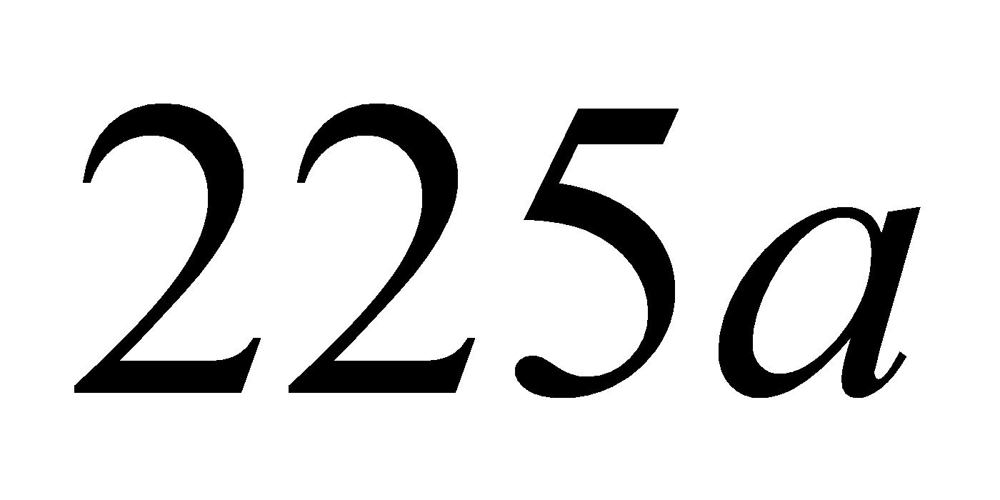
（元），方案二：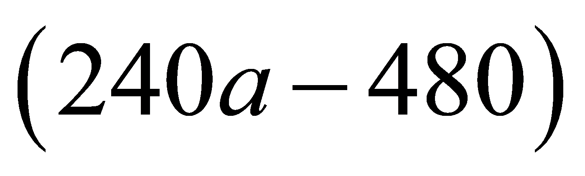
元(2)选择方案一较为合算，理由见解析
(3)甲乙两组的人数分别为15、20人
【分析】本题主要考查了列代数式，代数式求值，一元一次方程的实际应用，解题的关键是掌握以上知识点．
（1）根据所给的两种优惠方案分别计算出对应的费用即可；
（2）将代入（1）中的代数式求解比较即可；
（3）设甲组人数为x人，则乙组人数为
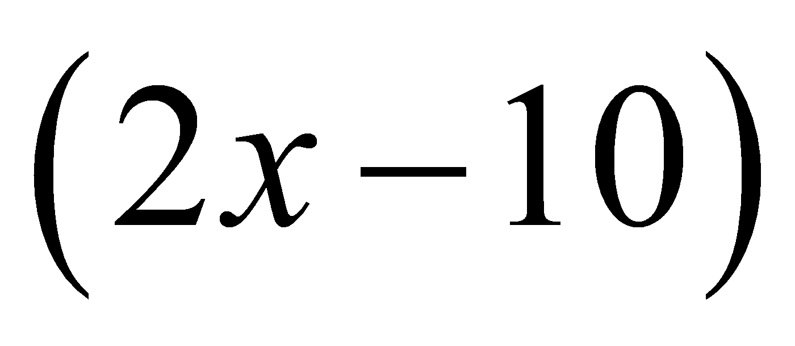
人，根据门票费用相同列出方程求解即可．【详解】（1）解：方案一：
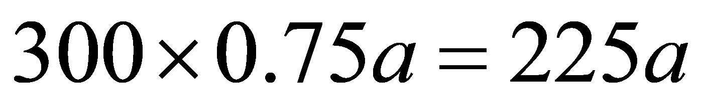
（元），方案二：
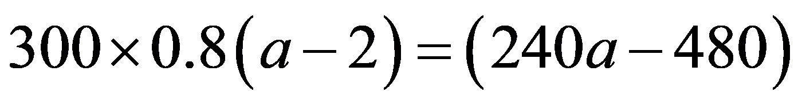
元；（2）解：当时，
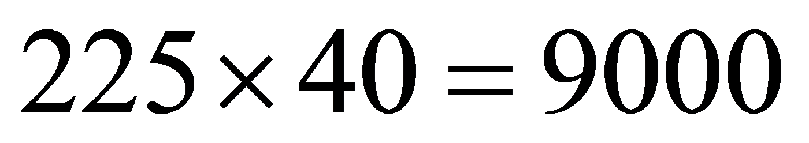
（元），（元），，
 选择方案一较为合算．
选择方案一较为合算．
（3）解：设甲组人数为x人，则乙组人数为人，
由题意得：，
解得： ，此时（人）；
，此时（人）；
答：甲、乙两组的人数分别为15、20人．
考点02 加工方案问题
7．某经销商计划找工厂代理加工一批果干，现有甲、乙两厂都想代理加工，已知甲厂每天加工果干80箱，乙厂每天加工果干120箱，且单独加工这批果干甲厂比乙厂要多用20天．在加工过程中，该经销商需付甲、乙厂每天的费用分别为400元和600元，另外，每个工厂需要一名营养师进行技术指导，并由经销商提供每天100元的指导费．
（1）分别求甲、乙两厂单独加工这批果干所需的时间；
（2）经甲、乙两厂与经销商协调，现有三种代理加工方案．
方案一：由甲厂单独完成；
方案二：由乙厂单独完成；
方案三：先由甲、乙两厂按原生产速度合作一段时间后，甲厂停工，乙厂单独完成剩余部分，同时乙厂每天的生产速度提高25%（乙厂提速后，该经销商需付乙厂每天的费用涨到700元），且乙厂的全部工作时间比甲厂的2倍还多4天．
①方案三中，甲厂加工了多少天？
②请你通过计算帮该经销商选择一种既省时又省钱的代理加工方案．
【答案】（1）甲厂单独加工这批果干需要60天，乙厂单独加工这批果干需要40天；（2）①甲厂加工了12天；②选方案三既省时又省钱
【分析】（1）设甲厂单独加工这批果干需要x天，则乙厂单独加工这批果干需要（x-20）天，然后根据甲厂每天加工果干80箱，乙厂每天加工果干120箱，且单独加工这批果干甲厂比乙厂要多用20天，列出方程求解即可；
（2）①先求出代理加工的这批果干共有60×80=4800（箱），设甲厂加工a天，则乙厂共加工（2a+4）天，然后根据先由甲、乙两厂按原生产速度合作一段时间后，甲厂停工，乙厂单独完成剩余部分，同时乙厂每天的生产速度提高25%（乙厂提速后，该经销商需付乙厂每天的费用涨到700元），且乙厂的全部工作时间比甲厂的2倍还多4天，列出方程求解即可；
②分别计算出三种方案的费用，然后比较即可得到答案．
【详解】解：（1）设甲厂单独加工这批果干需要x天，则乙厂单独加工这批果干需要（x-20）天，
根据题意80x=120（x-20），
解得x=60，
∴x-20=40，
答：甲厂单独加工这批果干需要60天，乙厂单独加工这批果干需要40天；
（2）①代理加工的这批果干共有60×80=4800（箱），
设甲厂加工a天，则乙厂共加工（2a+4）天，
根据题意得（80+120）a+120×（1+25%）（a+4）=4800，
解得a=12，
答：甲厂加工了12天；
②方案一需要60天，费用为60×（400+100）=30000（元）；
方案二需要40天，费用为40×（600+100）=28000（元）；
方案三需要12×2+4=28天，费用为12×（400+100）+12×（600+100）+（28-12）×（700+100）=27200（元），
∴选方案三既省时又省钱．
【点睛】本题主要考查了一元一次方程的应用，正确理解题意，列出方程求解是解题的关键．
8．松雷中学计划加工一批校服，现有甲、乙两个加工厂都想加工这批校服，已知甲工厂每天能加工这种校服18套，乙工厂每天能加工这种校服27套，且单独加工这批校服甲厂比乙厂要多用10天．在加工过程中，学校需付甲厂每天费用75元、付乙厂每天费用115元．
（1）求这批校服共有多少套；
（2）为了尽快完成这批校服，先由甲、乙两厂按原生产速度合作一段时间后，甲工厂停工，而乙工厂每天的生产速度提高 ，乙工厂单独完成剩余部分，且乙工厂的全部工作时间是甲工厂工作时间的2倍还少7天，求乙工厂共加工多少天；
，乙工厂单独完成剩余部分，且乙工厂的全部工作时间是甲工厂工作时间的2倍还少7天，求乙工厂共加工多少天；
（3）经学校研究决定制定如下方案：方案一：由甲工厂单独完成；方案二：由乙工厂单独完成；方案三：按（2）问方式完成；并且每种方案在加工过程中，每个工厂需要一名工程师进行技术指导，并由学校提供每天15元的午餐补助费，请你通过计算帮学校选择一种最省钱的加工方案．
【答案】（1）540套；（2）13天；（3）方案一：2700元，方案二：2600元，方案三：2590元，最省钱是方案三
【分析】（1）设这批校服共有x件，则可知甲厂需天，乙厂需要天，单独加工这批产品甲厂比乙厂要多用20天，根据题意找出等量关系，根据此等量关系列出方程求解即可．
（2）可设甲工厂加工a天，则乙工厂共加工（2a-7）天，根据题意找出等量关系，根据此等量关系列出方程求解即可．
（3）应分为三种情况讨论：①由甲厂单独加工；②由乙厂单独加工；③按（2）问方式加工，分别比较三种情况下，所耗时间和花费金额，求出即省钱，又省时间的加工方案．
【详解】解：（1）设这个公司要加工x件新产品，由题意得：−＝10，
解得：x＝540．
答：这批校服共有540件；
（2）设甲工厂加工a天，则乙工厂共加工（2a-7）天，依题意有
（18＋27）a＋27×（1＋）（2a-7−a）＝540，
解得a＝10，
2a-7＝20-7＝13．
故乙工厂共加工13天；
（3）①由甲厂单独加工：需要耗时为540÷18＝30天，需要费用为：30×（15＋75）＝2700元；
②由乙厂单独加工：需要耗时为540÷27＝20天，需要费用为：20×（115＋15）＝2600元；
③由两加工厂共同加工：需要耗时为13天，需要费用为：10×（15＋75）＋13×（115＋15）＝2590元．
所以，按（2）问的方式完成既省钱又省时间．
【点睛】本题主要考查一元一次方程的应用，关键在于理解清楚题意，找出等量关系列出方程．对于要求最符合要求类型的题目，应将所有方案，列出来求出符合题意的那一个即可．
9．某企业已收购毛竹90吨，根据市场信息，将毛竹直接销售，每吨可获利100元；如果对毛竹进行粗加工，每天可加工8吨，每吨可获利800元；如果进行精加工，每天可加工0.5吨，每吨可获利5000元．由于条件限制，在同一天中只能采用一种方式加工，并且必须在一个月（30天）内将这批毛竹全部销售，为此研究了两种方案：
(1)方案一：将毛竹都进行粗加工销售，则可获利多少元？（结果用科学记数法表示）
(2)方案二：30天时间都进行精加工，未来得及加工的毛竹在市场上直接销售，则可获利多少元？（结果用科学记数法表示）
(3)是否存在第三种方案，将部分毛竹精加工，其余毛竹粗加工，并且恰好在30天内完成．若存在，求销售后所得利润；若不存在，请说明理由．
【答案】(1)7.2×104
(2)8.25×104
(3)存在，当精加工20天，粗加工10天，恰好在30天内完成，销售后所得利润为1.14×105元
【分析】（1）粗加工的利润=每吨的利润×吨数；
（2）分两部分计算：精加工的利润+直接销售的利润；
（3）根据精加工的吨数+粗加工的吨数=90 列方程求解．
【详解】（1）800×90＝72000＝7.2×104．
故答案是 7.2×104．
（2）0.5×30×5000+（90﹣0.5×30）×100＝82500＝8.25×104．
故答案是 8.25×104．
（3）有这样一种方案：可设精加工x 天，则粗加工（30﹣x）天．
依题意可列方程 0.5x+8（30﹣x）＝90．
解之得 x＝20．
即精加工20天，粗加工10天．
销售后利润：0.5×20×5000+10×8×800
＝50000+64000
＝114000＝1.14×105（元）．
答：有这样一种方案：当精加工20天，粗加工10天，恰好在30天内完成，销售后所得利润为1.14×105元．
【点睛】此题考查一元一次方程的应用及计算能力，涉及方案设计问题．
10．列方程解应用题：
重庆恒都农业集团已建成涵盖牧草种植、饲料加工、品种繁育、肉牛育肥、电子交易、肉牛屠宰、精深加工、冷链运输、市场销售、科技研发于一体的全产业链格局．已知其旗下牛肉加工厂12月份共计从屠宰场以 万元/吨价格购买了38吨生牛肉为元旦节做准备，根据市场信息，若将生牛肉直接在市场上销售，售价为万元/吨，如果对牛肉进行粗加工，每天可加工7吨生牛肉，但是成品只有原材料的
万元/吨价格购买了38吨生牛肉为元旦节做准备，根据市场信息，若将生牛肉直接在市场上销售，售价为万元/吨，如果对牛肉进行粗加工，每天可加工7吨生牛肉，但是成品只有原材料的 ，并且每消耗1吨原材料还有其他成本万元，这样粗加工后所得成品的售价能达到6万元/吨；如果对牛肉进行精加工，每天可加工3吨生牛肉，但是成品只有原材料的
，并且每消耗1吨原材料还有其他成本万元，这样粗加工后所得成品的售价能达到6万元/吨；如果对牛肉进行精加工，每天可加工3吨生牛肉，但是成品只有原材料的 ，并且每消耗1吨原材料还有其他成本
，并且每消耗1吨原材料还有其他成本 万元，这样精加工后所得成品的售价能达到10万元/吨．受疫情影响，加工厂每天只能采取一种加工方式，并且本月的加工时间最多只有10天，现有两种加工方案：
万元，这样精加工后所得成品的售价能达到10万元/吨．受疫情影响，加工厂每天只能采取一种加工方式，并且本月的加工时间最多只有10天，现有两种加工方案：
方案一：尽可能多的精加工，剩余的生牛肉在市场上直接销售；
方案二：一部分粗加工，一部分精加工，且刚好10天时将所有原材料加工完．
（1）若按照方案二进行加工，需要粗加工多少天？
（2）哪个方案获得的利润最大？最大利润是多少？
（3）今年1月份时，为了应对春节期间的牛肉加工产品需求量剧增的情况，该加工厂某车间临时开放多条生产线，使得粗加工和精加工可以同时进行，其中需要粗加工的生牛肉数量是精加工的2倍．上午全部工人在粗加工产品，下午一半的工人仍然继续粗加工（上、下午的工作时间相等），到下班时刚好把粗加工的原材料全部处理完毕，另一半的工人去精加工产品，到下班时还剩下一小部分未完成，最后由5个工人再用一整天的时间刚好加工完．如果该车间工人每人每小时精加工的效率是粗加工效率的一半，则该车间工人共有多少人？
【答案】（1）2天；（2）方案二的利润最大，最大利润122.6万元；（3）10人
【分析】（1）可设粗加工x天，则细加工（10-x）天，根据每天粗加工，精加工的速度，和原材料的总量，可列出关于x的一元一次方程，解方程即可求解．
（2）方案一：按10天都精加工，则消耗生牛肉为吨，得到成品为吨，生牛肉剩余吨，根据生牛肉的进货价3.4万元/吨，精加工后成品销售单价10万元/吨，生牛肉销售单价3.6万元/吨，以及每精加工一吨产生其他成本0.6万元，可求出按方案一加工的总利润，方案二：根据（1）可得粗加工牛肉2天，则粗加工消耗生牛肉为吨，得到粗加工成品为吨，精加工消耗生牛肉为吨，得到精加工成品为吨，生牛肉的进货价3.4万元/吨，粗加工后成品销售单价为6万元/吨，精加工后成品销售单价10万元/吨，以及每粗加工一吨产生其他成本0.1万元，每精加工一吨产生其他成本0.6万元，可求出按方案二加工的总利润，比较方案一与方案二的总利润即可求解．
（3）可设精加工的速度为 ，则粗加工速度为
，则粗加工速度为 ，车间共有
，车间共有 个人，根据题中的等量关系:粗加工牛肉的总量是精加工牛肉总量的两倍,列出方程进行求解即可．
个人，根据题中的等量关系:粗加工牛肉的总量是精加工牛肉总量的两倍,列出方程进行求解即可．
【详解】（1）设粗加工x天，则细加工（10-x）天，
根据题意可得：，
整理得：，
，
解得： ，
，
故需要粗加工2天，
（2）方案一：精加工牛肉10天，则消耗生牛肉为吨，得到成品为吨，生牛肉剩余吨，
利润为：万元，
方案二：粗加工牛肉2天，则粗加工消耗生牛肉为吨，得到粗加工成品为吨，精加工消耗生牛肉为吨，得到精加工成品为吨，
利润为：122.6万元，
方案一的利润小于方案二的利润，故方案二的利润最大，最大利润为122.6万元，
（3）设精加工的速度为，则粗加工速度为，车间共有个人，由题意可得：
,
整理得:,
等式两侧同时除以得:
解得，
故该车间共有10人．
【点睛】本题考查了一元一次方程的实际应用,根据题意找出等量关系列出正确的方程是解题关键．
11．安宁市的一种绿色蔬菜，若在市场上直接销售，每吨利润为1000元，若经粗加工后销售，每吨利润可达4500元；若经精加工后销售每吨获利7500元．当地一家农产品企业收购这种蔬菜140吨，该企业加工厂的生产能力是：如果对蔬菜进行粗加工，每天可以加工16吨，如果进行精加工，每天可加工6吨，但两种加工方式不能同时进行，受季节条件限制，企业必须在15天的时间将这批蔬菜全部销售或加工完毕，企业研制了四种可行方案：
方案一：全部直接销售；
方案二：全部进行粗加工；
方案三：尽可能多地进行精加工，没有来得及进行精加工的 直接销售；
直接销售；
方案四：将一部分进行精加工，其余的进行粗加工，并恰好15天完成．
请通过计算以上四个方案的利润，帮助企业选择一个最佳方案使所获利润最多？
【答案】企业选择方案四所获利润最多．
【分析】本题考查的是一元一次方程的应用，根据总利润=单吨利润×销售质量即可求出方案一、二、三的利润，在方案四种，设精加工吨食蔬菜，则粗加工吨蔬菜，根据每天可精加工6吨或粗加工16吨结合加工总天数为15天即可得出关于的一元一次方程，解之即可得出的值，进而得出的值，再根据总利润=精加工部分的利润+粗加工部分的利润求出方案四的利润，将四种方案获得的利润比较后即可得出结论．
【详解】解：方案一可获利润：(元)；
方案二可获利润：(元)；
方案三可获利润：(元)；
方案四：设精加工x吨食蔬菜，则粗加工吨蔬菜，
根据题意得：
解得： ，
，
∴．
此情况下利润为：(元)，
∵，
∴企业选择方案四所获利润最多．
12．某种绿色食品，若直接销售，每吨可获利润0.1万元；若粗加工后销售，每吨可获利润0.4万元；若精加工后销售，每吨可获利润0.7万元．某公司现有这种绿色产品140吨，该公司的生产能力是：如果进行粗加工，每天可加工16吨；如果进行精加工，每天可加工6吨，但两种加工方式不能同时进行．受各种条件限制，公司必须在15天内将这批绿色产品全部销售或加工完毕，为此该公司设计了三种方案：
方案一：全部进行粗加工；
方案二：尽可能多地进行精加工，没有来得及进行精加工的直接销售；
方案三：将一部分进行精加工，其余的进行粗加工，并恰好15天完成．
你认为选择哪种方案可获利润最多，为什么？最多可获利润多少元？
【答案】选择方案三可获利润最多，最多可获利润740000元，理由见解析．
【分析】方案一由于全部进行粗加工，而，所以粗加工可以全部加工完，然后每吨可获利润4000元即可求出利润；
方案二由于尽可能多地进行精加工，没有来得及进行精加工的直接销售，那么15天可精加工吨，剩下的直接销售，再根据已知条件也可求出利润；
方案三由于将一部分进行精加工，其余的进行粗加工，并恰好15天完成，那么设将x吨绿色食品进行精加工，则将吨进行粗加工，根据恰好15天完成可以列出方程求出精加工和粗加工各自的吨数，然后利用已知条件求出利润．
【详解】解：方案一：进行粗加工，每天可加工16吨；则，
可获利润为：4000×140=560000（元）；
方案二：15天可精加工6×15=90（吨）， 说明还有50吨需要直接销售，
故可获利润：（元）；
方案三：设将 吨绿色食品进行精加工，则将吨进行粗加工，
吨绿色食品进行精加工，则将吨进行粗加工，
由题意得： ，
解得：，
故可获利润（元），
∵，
∴选择方案三可获利润最多，最多可获利润740000元．
【点睛】本题考查了一元一次方程的应用，本题和实际生活结合比较紧密，有利于培养学生应用数学解决生活中实际问题的能力．解题关键是要读懂题目的意思，根据题目给出的条件，找出合适的等量关系，列出方程，再求解．
考点03 租金方案问题
13．为增强学生的社会实践活动能力，某校组织八年级全体师生进行研学活动，原计划租用45座客车若干辆，但有30人没有座位；若租用同样数量的60座客车，则多出两辆车，且其余客车恰好坐满．已知45座客车租金为每辆320元，60座客车租金为每辆410元，问：
(1)原计划租用多少辆45座客车？该校八年级师生共多少人？
(2)若租用同一种客车，要使每名师生都有座位，应该怎样租车才合算？
【答案】(1)原计划租用10辆45座客车，该校八年级师生共480人；
(2)租用8辆60座客车合算．
【分析】本题考查了一元一次方程的应用以及有理数的混合运算，解题的关键是：（1）找准等量关系，正确列出一元一次方程；（2）根据各数量之间的关系，列式计算．
（1）设原计划租用x辆45座客车，则这批学生的人数是人，根据“若租用同样数量的60座客车，则多出两辆车，且其余客车恰好坐满”，即可得出关于x的一元一次方程，解之即可得出原计划租用45座客车的数量；
（2）利用总租金=每辆车的租金×租用数量，可分别求出租用45座及60座客车所需总租金，比较后即可得出租用8辆60座客车合算．
【详解】（1）解：设原计划租用x辆45座客车，则这批学生的人数是人，
依题意得：，
解得： ，
，
∴．
答：原计划租用10辆45座客车，该校八年级师生共480人；
（2）解：租用45座客车所需费用为（元），
租用60座客车所需费用为（元）．
∵，
∴租用8辆60座客车合算．
14．为增强学生生态保护意识，提升科学探究素养，某学校组织六年级学生深入湿地自然保护区开展研学活动，如果租用 座的客车，则有
座的客车，则有 人没有座位；如果租用同样数量的
人没有座位；如果租用同样数量的 座的客车，则除多出
座的客车，则除多出 辆外，其余客车恰好坐满，已知租用座的客车日租金为每辆元，租用座的客车日租金为每辆
辆外，其余客车恰好坐满，已知租用座的客车日租金为每辆元，租用座的客车日租金为每辆 元，租用哪种客车更合算？租几辆车？
元，租用哪种客车更合算？租几辆车？
【答案】租用座的客车更合算，租 辆车．
辆车．
【分析】本题考查了一元一次方程的应用——方案选择问题，设租用座的客车辆，根据题意得，然后解方程并检验，然后设计可行的租车方案，通过计算并比较不同方案的费用，从而找出最合算的方案．读懂题意，找出等量关系，列出方程是解题的关键．
【详解】解：设租用座的客车辆，
根据题意得，，
解得： ，
，
∴共有学生，
∴租用座的客车 辆，租金为（元），
辆，租金为（元），
 租用座的客车辆，租金为（元），
租用座的客车辆，租金为（元），
 租用座的客车辆，租用座的客车辆，租金为（元），
租用座的客车辆，租用座的客车辆，租金为（元），
 租用座的客车
租用座的客车 辆，租用座的客车
辆，租用座的客车 辆，租金为（元），
辆，租金为（元），
租用座的客车辆，租用座的客车辆，租金为（元），
综上可知：租用座的客车更合算，租辆车．
15．1套检测仪器由2个 部件和3个
部件和3个 部件构成，用钢材可以做40个部件或240个部件．
部件构成，用钢材可以做40个部件或240个部件．
(1)若要用 钢材制作若干套这种仪器，应用多少钢材做部件，多少钢材做部件？
钢材制作若干套这种仪器，应用多少钢材做部件，多少钢材做部件？
(2)现在某公司要租赁这批仪器套，每天的付费方案有如下两种：
方案一：当不超过60时，每套支付租金100元；当超过60时，超过的套数每套支付租金打八折．
方案二：不论租赁多少套，每套支付租金90元．
当超过60时，选择哪种租赁方案更合算？请说明理由．
【答案】(1)用 钢材做部件，用钢材做部件
钢材做部件，用钢材做部件
(2)当时，选择方案二更合算，当时，两种方案费用相同；当时，选择方案一更合算．
【分析】（1）设应用钢材做A部件，钢材做B部件，根据一套检测仪器由两个A部件和三个B部件构成，列方程求解； （2）方案一租金根据当a超过60套时，超过的套数每套支付租金打八折列式计算可得；方案二租金根据每套支付租金90元列式计算可得；根据,得到，三种情况分析即可；
【详解】（1）
解：设用 钢材做部件，用
钢材做部件，用 钢材做部件．依题意，得
钢材做部件．依题意，得 ，解得，则．
，解得，则．
答：用钢材做部件，用钢材做部件．
（2）解：方案一：元．
方案二：元．
当时，解得．
答：当时，，选择方案二更合算；
当时，两种方案费用相同；
当时，选择方案一更合算．
【点睛】本题考查了一元一次方程的实际应用，配套问题的解决方法，解决问题的关键是正确理解题意列得方程或列式计算．
16．某中学组织学生春游，原计划租用座客车若干辆，但有人没有座位；若租用同样数量的座客车，则多出一辆车，且其余客车恰好坐满，已知座客车每日每辆租金为 元，座客车每日每辆租金为元．试问：
元，座客车每日每辆租金为元．试问：
(1)春游学生共多少人，原计划租座客车多少辆？
(2)若租用同一种车，要使每位同学都有座位，怎样租车更合算．
【答案】(1)春游学生共人，原计划租座客车 辆
辆
(2)租用座客车更合算
【分析】（1）设春游学生共人，然后根据45座客车和60座客车的数量相等列方程求解即可．
（2）分别求出座客车、座客车各自的租金，即可得出结果．
【详解】（1）解：设春游学生共人，
则根据题意得：，
解得：，
∴春游学生共有人，原计划租座客车辆，
答：春游学生共人，原计划租座客车辆；
（2）若租用座客车则需要租辆，则需要的租金为元，
若租用座客车则需要租辆，则需要的租金为元，
∵，
∴租用座客车更合算．
【点睛】本题考查了一元一次方程的应用，读懂题意，理清数量关系，列出方程是解本题的关键．
17．某中学组织学生参加文艺汇演，如果单租45座客车若干辆，且每辆刚好坐满；如果单租60座客车，可少租一辆，且空15个座位．已知45座客车租金为每辆250元，60座客车租金为每辆300元，试问：
(1)求参加文艺汇演的学生总人数是多少?
(2)如果单租，哪种客车省钱?
(3)如果同时租用两种客车分别租多少辆最省钱?
【答案】(1)学生225人
(2)单租60座的客车省钱
(3)租1辆45座的客车和3辆60座的客车最省钱
【分析】（1）设单租辆45座客车，则参加文艺汇演的学生总人数为人，由题意得：，计算求出的值，进而可得的值；
（2）分别计算单租不同客车的租金，然后进行比较即可；
（3）设租辆45座客车，辆60座客车，则，根据 均为正整数进行求解即可．
均为正整数进行求解即可．
【详解】（1）解：设单租辆45座客车，则参加文艺汇演的学生总人数为人，
由题意得：，
解得：．
则（人）．
∴参加文艺汇演的学生总人数为225人．
（2）解：由题意知，单租45座客车，租金为元；
单租60座客车，租金为元；
∵，
∴单租60座客车更省钱．
（3）解：设租辆45座客车，辆60座客车，
则，
∵均为正整数，
解得：，
∴租1辆45座客车，3辆60座客车最省钱．
【点睛】本题考查了一元一次方程的应用．解题的关键在于理解题意，列出正确的方程．
18．为拓宽学生视野，某中学决定组织部分师生去庐山西海开展研学旅行活动，在参加此次活动的师生中，若每位老师带19个学生，还剩11个学生没人带；若每位老师带20个学生，就有一位老师少带7个学生，为了安全，既要保证所有师生都有车坐，又要保证每辆客车上至少要有2名老师．现有甲、乙两种大客车，它们的载客量和租金如表所示．
甲种客车 | 乙种客车 | |
载客量/（人/辆） | 30 | 50 |
租金/（元辆） | 300 | 400 |
（1）参加此次研学旅行活动的老师和学生各有多少人？
（2）这次活动全部租甲种客车行吗？如果行，怎样安排；如果不行，请说明理由．
（3）学校计划此次研学旅行活动的租车总费用不超过4100元，租用乙种客车不少于7辆，你能得出哪几种不同的租车方案？其中哪种租车方案最省钱？请说明理由．
【答案】（1）老师有18人，学生有353人；（2）不行，理由见解析；（3）见解析
【分析】（1）设有x个老师，根据学生数不变，即可得出关于x的一元一次方程，解之即可得出x的值，再将其代入（19x+11）中即可求出学生人数；
（2）利用租车数量=师生人数÷每辆车的载客量，可求出租用甲种客车的数量，结合每辆客车上至少要有2名老师及共有18名老师，即可得出这次活动不能全部租甲种客车；
（3）先求出7辆乙种客车的载客人数，结合师生总数可求出剩余人数，根据甲、乙两种客车的载客量可找出各租车方案，分别求出各租车方案所需费用，比较后即可得出结论．
【详解】解：（1）设有x个老师，
依题意，得：19x+11=20x-7，
解得：x=18，
∴19x+11=353．
答：参加此次研学旅行活动的老师有18人，学生有353人．
（2）（18+353）÷30=12（辆）……11（人），
12+1=13（辆），
13×2=26（人），
∵18＜26，
∴老师数不足以每辆车分2人，
∴这次活动不能全部租甲种客车．
（3）18+353-50×7=21（人），21＜30＜50，
∴有两种租车方案，方案1：租用1辆甲种客车，7辆乙种客车；方案2：租用8辆乙种客车．
方案1所需费用为300+400×7=3100（元）；
方案2所需费用为400×8=3200（元）．
∵3100＜3200，
∴方案1最省钱，即：租用1辆甲种客车，7辆乙种客车．
【点睛】本题考查了一元一次方程的应用，解题的关键是：（1）找准等量关系，正确列出一元一次方程；（2）求出全部租甲种客车需要的教师数；（3）找出乘坐7辆乙种客车外剩余的人数．
考点04 施工方案问题
19．为确保邵阳市第二届旅游发展大会“早安隆回，云上花瑶”成功举办，县委县政府要求云溪路彩虹大道修路工程6个月完工．现由甲、乙两工程队参与施工，已知甲队单独完成需要8个月，乙队单独完成需要12个月．为了能如期完工，前期由甲、乙两队共同施工，后期改由一个工程队单独施工．现工程队指挥部结合实际情况拟定两套工程方案：
①先由甲、乙两个工程队合作 个月后，再由甲队单独施工，保证恰好按时完成；
个月后，再由甲队单独施工，保证恰好按时完成；
②先由甲、乙两个工程队合作 个月后，再由乙队单独施工，也保证恰好按时完成；
个月后，再由乙队单独施工，也保证恰好按时完成；
求两套方案中和的值．
【答案】 ；
；
【分析】本题考查了工程问题，根据题意寻找等量关系是解题的关键；
①根据题意列方程，解方程可得m的值；
②根据题意列方程，解方程可得n的值；
【详解】①由题知，，解得；
②由题知，，解得．
答：方案①中；方案②中．
20．某工程队承包了一项目，现提供两种施工方案：①所有员工同时施工，计划24天完成：②将所有员工平均分成若干组施工队，分阶段投入施工，即第1组先施工，每隔天（为 之间的整数，不包括5和10），增加一组员工，且每组员工从加入开始至完工结束全程参与施工．该工程队按照方案②进行施工，完工后发现最后一组员工的施工时间恰好为第一组的
之间的整数，不包括5和10），增加一组员工，且每组员工从加入开始至完工结束全程参与施工．该工程队按照方案②进行施工，完工后发现最后一组员工的施工时间恰好为第一组的 ．（说明：无论采用何种方案，所有员工的施工速度都相等，且保持不变）
．（说明：无论采用何种方案，所有员工的施工速度都相等，且保持不变）
(1)求第一组施工队员的工作时间．
(2)已知这若干组施工队每组5人，则该工程队共有多少人？
【答案】(1)第一组施工队员的工作时间为44天
(2)该工程队共有30人
【分析】本题考查一元一次方程的实际应用：
（1）设最后一组施工队的工作时间为天，则第一组的工作时间为 天，根据题意，得到所有员工的平均施工时间为
天，根据题意，得到所有员工的平均施工时间为 天，列出方程进行求解即可；
天，列出方程进行求解即可；
（2）平均分成组施工队，则第一组比最后一组多工作天，求出的正整数解即可．
【详解】（1）解：设最后一组施工队的工作时间为天，则第一组的工作时间为天，
∵中间都是相隔天，
∴所有员工的平均施工时间为，
解得．
答：第一组施工队员的工作时间为44天．
（2）设平均分成组施工队，则第一组比最后一组多工作天，
因为为之间的整数，不包括5和为正整数，
所以，
（人）；
答：该工程队共有30人．
21．公司需在一个月（31天）内完成新建办公楼的装修工程．如果甲、乙两个工程队合作，12天完成，如果甲单独做8天，剩下的工作由乙独做18天可以完成．
（1）求甲、乙两个工程队单独完成工作的天数；
（2）如果请甲工程队施工，公司每日需付费用2000元，如果请乙工程队施工，公司每日需付费用1400元，在规定的时间内：A、请甲工程队单独完成此项工程；B、请乙工程队单独完成此项工程；C、请甲、乙两个工程队合作完成此项工程，试问：以哪一种方案花钱最少？
【答案】（1）甲20天；乙30天；（2）选A方案．
【分析】（1）设乙单独做的工作效率为x，甲单独做8天，剩下的工作由乙独做18天可以完成，也看成甲乙合作8天，再由乙独做10天完成装修工程，据此关系列出方程即可求得x的值，从而求得两个工程队单独完成工作的天数；
（2）分别计算出甲单独做、乙单独做、甲乙合做完成工作所需的费用，然后比较即可选择方案．
【详解】（1）设乙单独做的工作效率为x
由题意得：
即：
解得：
∴乙单独完成工作的时间为30（天）
∵甲的工作效率为：
∴甲单独完成工作的时间为20（天）．
所以甲乙单独完成工作所需的时间分别为20天和30天．
（2）甲单独做所需费用为：（元）
乙单独做所需费用为：（元）
甲乙合作所需费用为：（元）
∴选甲单独做完成工作所需的费用较少．
故选A方案．
【点睛】本题考查了一元一次方程在工程问题中的应用，理解题意找到等量关系是关键，同时注意，本题设工作效率为未知数，直接设未知数则无法用一元一次方程解决．
22．市中区欲将四方块打造成内江的“太古里”，现一期工程已基本完工，即将进入道路施工阶段．该工程由甲队单独完成需要24天，由乙队单独完成需要16天．甲、乙两队合作施工一段时间后，由于乙队另有任务离开，剩下的工程由甲队单独施工完成．甲队单独施工完成剩余工程的时间比两队合作施工的时间少4天．
(1)求甲、乙两队合作施工的时间．
(2)施工完成后，两队共获得工程款30万元，若按每队所完成的工程量进行分配，甲、乙两队各获得工程款多少万元？
【答案】(1)甲、乙两队合作8天才能完成该工程；
(2)甲、乙两队各获得工程款万元．
【分析】本题主要考查了一元一次方程的应用和有理数四则混合运算的应用，解题的关键是理解题意，列出方程和算式，准确计算；
（1）设甲、乙两队合作天才能完成该工程，将整个工程看作单位1，然后列方程，解方程即可；
（2）根据题意求得各自完成工作量，再按比例分配，计算即可．
【详解】（1）.解：设甲、乙两队合作天才能完成该工程，则甲队单独施工的时间为天，
依题意可列方程：，
解得： ，
，
所以甲、乙两队合作8天才能完成该工程；
（2）解：由（1）知乙队完成工作量，则甲队也完成工作量，
按比例分配得甲队获得工程款万元，乙队获得工程款万元，
答：甲、乙两队各获得工程款万元．
23．某市需要对某块地进行绿化改造．经招标，现有甲、乙两个工程队可供选择．已知甲队每天能完成的绿化改造面积比乙队多 平方米、甲队与乙队合作一天能完成
平方米、甲队与乙队合作一天能完成 平方米的绿化改造面积．
平方米的绿化改造面积．
(1)甲、乙两队每天各能完成多少平方米的绿化改造面积？
(2)该块地需要进行绿化改造的面积共 平方米，甲队每天的施工费用为
平方米，甲队每天的施工费用为 元，乙队每天的施工费用为元．在甲单独完成；乙单独完成；甲乙合作一起完成的三个方案中，哪个方案的施工费用最少？
元，乙队每天的施工费用为元．在甲单独完成；乙单独完成；甲乙合作一起完成的三个方案中，哪个方案的施工费用最少？
【答案】(1)甲队每天能完成平方米的绿化改造面积，乙队每天能完成 平方米的绿化改造面积
平方米的绿化改造面积
(2)甲单独完成的施工费用最少
【分析】本题考查了一元一次方程在工程问题中的应用，正确理解题意是解题关键．
（1）设乙队每天能完成平方米的绿化改造面积，则甲队每天能完成平方米的绿化改造面积，根据题意列方程即可求解；
（2）分别计算出三种方案的施工天数，即可求出对应的施工费用．
【详解】（1）解：设乙队每天能完成平方米的绿化改造面积，则甲队每天能完成平方米的绿化改造面积，
由题意得：，
解得： ，
，
∴
答：甲队每天能完成平方米的绿化改造面积，乙队每天能完成平方米的绿化改造面积
（2）解：①甲单独完成需要：（天），
施工费用为：（元）；
②乙单独完成需要：（天），
施工费用为：（元）；
③甲乙合作一起完成需要：（天），
施工费用为：（元）；
∴甲单独完成的施工费用最少
24．为推进我国“碳达峰、碳中和”双碳目标的实现，各地大力推广分布式光伏发电项目．某公司计划建设一座小型光伏发电站，若由甲工程队单独施工需要3周，每周耗资8万元，若由乙工程队单独施工需要6周，每周耗资3万元．
(1)若甲、乙两工程队全程合作施工，需要几周完成？共需耗资多少万元？
(2)若由甲、乙两工程队先合作施工，剩下的由乙工程队单独完成，恰好用了4周完成建设任务，求甲工程队施工了几周？这样安排与两工程队全程合作相比，哪种方案更省钱？（时间按整周计算）
【答案】(1)甲、乙两工程队合作施工，需要2周完成，共耗资22万元；
(2)甲施工队施工了1周，由甲和乙两工程队合作施工1周，剩下的由乙单独施工3周更省钱．
【分析】（1）设甲、乙两工程队合作施工，需要x周完成，根据“甲工程队单独施工需要3周”、“由乙工程队单独施工需要6周”可列方程求解；
（2）设先由甲和乙两工程队合作施工y周，剩下的由乙单独完成，根据“甲的工作量 乙的工作量
乙的工作量 1”列出方程并解答；然后计算总耗资即可求解．
1”列出方程并解答；然后计算总耗资即可求解．
【详解】（1）解：设甲、乙两工程队合作施工，需要x周完成．
根据题意，得．
解得．
∴（万元）．
答：甲、乙两工程队合作施工，需要2周完成，共耗资22万元；
（2）解：设先由甲和乙两工程队合作施工y周，剩下的由乙单独完成．
根据题意，得，
解得 ，
，
即甲施工队施工了1周，
（周）
∴（万元）．
∵，
所以由甲和乙两工程队合作施工1周，剩下的由乙单独施工3周更省钱．
【点睛】本题考查一元一次方程的应用，关键是根据工作量工作时间工作效率列方程求解．
考点05 运输方案问题
25．某公司要把某物品运往外地，现有两种运输方式可供备选．
方案一：使用货运的货车运输，装卸收费600元，另外每千米运输路程再加收6元；
方案二：使用铁路的火车运输，装卸收费1160元，另外每千米运输路程再加收4元．
(1)你认为什么情况下两种运输费用一致？
(2)当运输路程为400千米时，选择哪种运输更合适？
【答案】(1)运输路程是280千米时，两种运输收费一致
(2)选用铁路的火车运输方式
【分析】本题考查了一元一次方程的应用，解题关键是要读懂题目的意思，根据题目给出的条件，找出合适的等量关系列出方程，再求解．
（1）设运输路程是千米，根据两种运输的总费用相等列出方程，求解即可；
（2）把路程为400千米代入，分别计算两种运输的总费用，比较其大小即可．
【详解】（1）设运输路程是千米，
根据题意得：
解这个方程，得
答：当运输路程是280千米时，两种运输收费一致；
（2）方案一：所需费用（元）
方案二：所需费用（元）
因为
所以选择火车运输更合适．
答：若运输路程是400千米，这家公司应选用铁路的火车运输方式．
26．甲，乙两个仓库向A，B两地运送水泥，已知甲库可调出100t水泥，乙库可调出80t水泥，A地需70t水泥，B地需110t水泥，两库到A，B两地的路程和运费如下表：
（表中运费栏“元/（t•km）”表示每t水泥运送1km所需人民币）
路程（km） | 运费（元/t•km） | 运量（t） | ||||
甲库 | 乙库 | 甲库 | 乙库 | 甲库 | 乙库 | |
A | 15 | 20 | 12 | 12 | x | |
B | 20 | 25 | 8 | 10 | ||
设甲库运往A地水泥为xt，请填写好表．
(1)设甲库运往A地水泥为xt，请填写好表．
(2)根据这张表，甲库运往A地的总费用是 ，乙库运往B地的总费用是 ，所以全部费用是 ．
(3)若所拨全部费用是35600元，写出一种可行的运输方案．
【答案】(1)见解析
(2)180x，(250x+2500)，(30x+35300)
(3)甲向A地运10吨，向B地运90吨，乙向A地运60吨，向B地运20吨时，总运费为35600元．
【分析】（1）根据题意可表示出甲库运往B地的水泥，乙库运往A地和B地的水泥吨数；
（2）根据总运费等于运往两地的费用之和列式整理即可得解；
（3）根据总运费为35600元列出方程计算即可求解．
【详解】（1）解：（1）设甲库运往A地水泥xt，
则运往B地水泥（100-x）t，乙库运往A地（70-x）t，B地的水泥110-（100-x）=（10+x）t，
填表如下：
路程（km） | 运费（元/t•km） | 运量（t） | ||||
甲库 | 乙库 | 甲库 | 乙库 | 甲库 | 乙库 | |
A | 15 | 20 | 12 | 12 | x | 70-x |
B | 20 | 25 | 8 | 10 | 100-x | 10+x |
（2）解：甲库运往A地的总费用是15×12x=180x，
乙库运往B地的总费用是25×10×（10+x）=250x+2500，
所以全部费用是15×12x+20×8×（100-x）+20×12×（70-x）+25×10×（10+x）
=180x+16000-160x+16800-240x+2500+250x
=30x+35300．
故答案为：180x，(250x+2500)，(30x+35300)；
（3）根据题意得：30x+35300=35600，
解得x=10．
100-x=90，70-x=60，10+x=20，
故甲向A地运10吨，向B地运90吨，乙向A地运60吨，向B地运20吨时，总运费为35600元．
【点睛】本题考查了列代数式以及一元一次方程的实际应用问题．解题的关键是理解题意，读懂表格求解．
27．某市水果批发部门欲将A市的一批水果运往本市销售，有火车和汽车两种运输方式，运输过程中的损耗均为200元/时．其他主要参考数据如下表所示：
运输工具 | 途中平均速度/（千米/时） | 运费（元/千米） | 装卸费用/元 |
火车 | 100 | 15 | 2000 |
汽车 | 80 | 20 | 900 |
(1)如果选择汽车运输的总费用比选择火车运输的总费用多1100元，你知道本市与A市之间的路程是多少千米吗？（总运费=运费+装卸费用+损耗）
(2)设A市与本市之间的距离为s千米，假如你是A市水果批发部门的经理，若要将这批水果运往本市销售，你会选择哪种运输方式．
【答案】(1)本市与A市之间的路程是400千米
(2)当时，选择火车运输合算；当时，选择汽车运输合算；当时，两种方式都一样
【分析】本题主要考查了一元一次方程的应用，根据题意列出方程是解答本类问题的关键．
（1）设路程为x千米，题中等量关系是：汽车的总支出费用比火车费用多1100元，列出方程求解即可；
（2）分别算出的火车和汽车所需的运费，再进行比较即可求解．
【详解】（1）解：设本市与A市之间的路程是x千米，
根据题意得：，
解得：，
答：本市与A市之间的路程是400千米．
（2）选择汽车运输的费用为：，
选择火车运输费用为：，
当两者相等时，，
解得： ，
，
即当时，选择火车运输合算；
当时，选择汽车运输合算；
当时，两种方式都一样．
28．某公司在A，B两地分别有库存机器16台和12台，现要运往甲、乙两地，其中运往甲地15台，运往乙地13台．从A地运一台机器到甲地的运费为500元，到乙地的运费为400元；从B地运一台机器到甲地的运费为300元，到乙地的运费为600元．
(1)设从A地运往甲地x台机器，请把下表补充完整；
收地运地 | 甲地 | 乙地 | 总计 |
A地 | x | 16台 | |
B地 | 12台 | ||
总计 | 15台 | 13台 | 28台 |
(2)如果某种调运方案的运费是10300元，那么从A，B两地分别运往甲、乙两地的机器各多少台？
【答案】(1)，， ；
；
(2)从A地分别运往甲、乙两地3台、13台；从B地分别运往甲、乙两地12台、0台．
【分析】本题考查了列代数式，一元一次方程的应用．
（1）用总数减去 求出A地运往乙地和B地运往甲地的数量，进而可求出B地运往乙地的数量；
求出A地运往乙地和B地运往甲地的数量，进而可求出B地运往乙地的数量；
（2）根据题干所给收费规则结合表格列方程求解即可．
【详解】（1）由表格可知，A地运往乙地台，B地运往甲地台，
可知B地运往乙地台，
表格如下：
收地运地 | 甲地 | 乙地 | 总计 |
A地 | x | 16台 | |
B地 |
| 12台 | |
总计 | 15台 | 13台 | 28台 |
（2）∵从A地运一台机器到甲地的运费为500元，到乙地的运费为400元；从B地运一台机器到甲地的运费为300元，到乙地的运费为600元
∴共计费用
（元），
∵运费是10300元，
∴，
解得： ，
，
∴，，，
即从A地分别运往甲、乙两地3台、13台；从B地分别运往甲、乙两地12台、0台．
29．西双版纳是一个充满热带风情的地方，气候温暖湿润，四季花开不断．丰富的植物种类为蜜蜂提供了丰富多样的蜜源，使得西双版纳的蜂蜜具有独特的风味．为了将新鲜蜂蜜运送到市场销售，需要使用专门的冷藏货车进行运输．现有两种型号的冷藏车，A型和B型，用于运输蜂蜜到甲市．请根据以下材料完成学习任务：
材料一：A型车的平均速度为80千米/小时，B型车的平均速度为100千米/小时．从西双版纳到甲市，B型车比A型车少用1.5小时．
材料二：已知A型车每辆可装载6吨蜂蜜，B型车每辆可装载5吨蜂蜜．如果单独租用B型车，则恰好装完所有蜂蜜；若单独租用相同数量的A型车，则差8吨蜂蜜才能装载满．
材料三：在材料一与材料二的条件下，冷藏车运完蜂蜜从西双版纳到甲市的相关数据如表所示：
路费单价 | 冷柜使用单价 | |
5元/（千米 | A型冷柜车 | B型冷柜车 |
16元/（小时 | 18元/（小时 | |
 辆）
辆）(1)求A型车从西双版纳到甲市用了多少小时？
(2)求这批蜂蜜共有多少吨？
(3)本次蜂蜜从西双版纳到甲市的运输，应如何选择A、B型车，使得总费用最少？最少的总费用是多少元？
【答案】(1)A型车从西双版纳到甲市用了7.5小时；
(2)这批蜂蜜共有40吨；
(3)应选择A型车5辆，B型车2辆，使得总费用最少，最少的总费用是21816元．
【分析】此题考查了一元一次方程的应用，有理数的混合运算的应用，找准等量关系，正确列出算式和方程是解题的关键．
（1）设A型车从西双版纳到甲市用了x小时，则B型车从西双版纳到甲市用了小时，根据题意列出一元一次方程求解即可；
（2）设这批蜂蜜共有y吨，根据题意列出一元一次方程求解即可；
（3）首先求出从西双版纳到甲市的路程为千米，设租用A型车m辆，B型车n辆，所需总费用为w，表示出总费用，然后根据分情况求解比较即可．
【详解】（1）设A型车从西双版纳到甲市用了x小时，则B型车从西双版纳到甲市用了小时，
根据题意得，
解得
∴A型车从西双版纳到甲市用了7.5小时；
（2）设这批蜂蜜共有y吨
根据题意得，
解得
∴这批蜂蜜共有40吨；
（3）从西双版纳到甲市的路程为（千米）
∵A型车每辆可装载6吨蜂蜜，B型车每辆可装载5吨蜂蜜，这批蜂蜜共有40吨
∴设租用A型车m辆，B型车n辆，所需总费用为w，
∴，
根据题意得，
∴当 ，时，（元）；
，时，（元）；
当 ，
， 时，（元）；
时，（元）；
当 ，
， 时，（元）；
时，（元）；
当， 时，（元）；
时，（元）；
当 ，时，（元）；
，时，（元）；
当 ，
， 时，（元）；
时，（元）；
当 ，
， 时，（元）；
时，（元）；
当 ，
， 时，（元）；
时，（元）；
综上所述，应选择A型车5辆，B型车2辆，使得总费用最少，最少的总费用是21816元．
30．综合与实践：砂糖桔是广西某县传统特产，具有皮薄，汁多，化渣，味清甜，吃后沁心润喉，是老少皆宜的美味佳品．请阅读以下材料，完成学习任务：请同学们根据材料一、材料二提供的信息完成3个任务：
材料一：某县批发市场计划运输一批砂糖橘到甲地出售，为保证砂糖桔新鲜需用带冷柜的货车运输．现有 | |||||||||
材料二：已知 | |||||||||
材料三：在材料一与材料二的条件下，冷柜车运完砂糖桔从某县到甲地时，运输的相关数据如下表所示：
（参考公式：冷柜使用费 | |||||||||
 小时，
小时，(1)请求出A型车从某县到甲地的时间；
(2)问这批砂糖桔共有多少吨？
(3)本次砂糖桔从某县到甲地的运输单独安排A型车或B型车，应该选用哪种车型使得总费用较少？较少的总费用是多少元？
【答案】(1)A型车从某县到甲地的时间为10小时
(2)这批砂糖橘共有32吨
(3)单独安排A型车运输才能使得本次总费用较少，较少的总费用是4000元
【分析】本题考查了一元一次方程的应用．
（1）设型车从某县到甲地的时间为小时，则型车从某县到甲地的时间为小时，根据从某县到甲地的路程相等列方程求解即可；
（2）设这批砂糖橘共有吨，根据单独租用相同数量的型车，则还剩4吨砂糖桔没有装上车列方程求解；
（3）按照计费方式分别算出两种型号的车所需费用即可求解．
【详解】（1）解：设型车从某县到甲地的时间为小时，则型车从某县到甲地的时间为小时，
由题意得，，
解得：．
答：A型车从某县到甲地的时间为10小时；
（2）解：设这批砂糖橘共有吨，
由题意得，，
解得：．
答：这批砂糖桔共有32吨；
（3）解：∵型车为（辆）；
型车为（辆） 4（吨），即：（辆）；
4（吨），即：（辆）；
∴运输32吨砂糖橘，型车需要4辆，型车需要5辆，
某县到甲地的距离为：（千米）．
安排型车的总费用：（元），
安排型车的总费用：（元），
因为，所以单独安排运输能使总费用较少，是4000元．
考点06 进货方案问题
31．忠县作为“中国柑橘城”，柑橘产业已经非常成熟，形成了多个特色品种，其中最出名的当属“爱媛果冻橙”和“沃柑”．某超市用 元从农户处购进“果冻橙”和“沃柑”两个品种的柑橘共
元从农户处购进“果冻橙”和“沃柑”两个品种的柑橘共 斤．进价和售价如下表所示：
斤．进价和售价如下表所示：
果冻橙 | 沃柑 | |
进价（元/斤） |
|
|
售价（元/斤） |
|
|


(1)求该超市购进“果冻橙”和“沃柑”各多少斤？
(2)由于水果运输过程中会有一定的损坏，“果冻橙”的损坏率为 ，“沃柑”的损坏率为
，“沃柑”的损坏率为 ，损坏的柑橘不能进行销售，若这批柑橘全部售出的总利润为元，求的值；
，损坏的柑橘不能进行销售，若这批柑橘全部售出的总利润为元，求的值；
(3)该超市第二次进货时，农户给出了如下优惠方案：
“果冻橙”优惠方案
一次性购买数量 | 不超过 | 超过 |
折扣数 | 九折 | 八折 |
“沃柑”优惠方案
购买总金额 | 不超过 | 超过 | 超过 |
返现金金额 | 0元 | 直接返现金 | 先返购买总金额的 |
 元
元 元
元已知超市购进“果冻橙”共支付了元，购进“沃柑”共支付了元，运输中仍按照（2）中的损坏率考量，将第二次购进的两种柑橘全部卖完，一共可获得利润多少元？
【答案】(1)果冻橙斤，沃柑斤
(2)
(3)元
【分析】本题考查了解一元一次方程的应用的知识，熟练掌握以上知识是解题的关键．
（1）设购进果冻橙斤，沃柑斤，根据题意列式求解即可．
（2）根据题意可得售出的收入为，进而根据题意列式求解即可．
（3）设果冻橙购买斤，则超过斤的部分为斤，根据题意列方程求解即可得果冻橙购买斤数；设沃柑购买总金额为元，根据题意列方程求解购进沃柑的斤数，进而列式求得获得总利润．
【详解】（1）解：设购进果冻橙斤，沃柑件斤，
依题意可得，
解得：，
即，
∴果冻橙斤，沃柑斤．
（2）解：根据题意可得：售出的收入为，
故可列方程，
解得：，
∴的值为．
（3）解：设果冻橙购买斤，则超过斤的部分为斤，
∴，
解得： ；
；
设沃柑购买总金额为元，
根据题意可得：，
解得：
∴购进沃柑的斤数为：，
∴两种柑橘全部卖完，一共可获得利润为：（元）．
32．某店铺老板到手机配件专卖店进货，该店推出甲、乙两种配件促销活动，已知甲配件每件标价20元，乙配件每件标价4元，现有以下两个促销方案，方案一：买一送一（每买一件甲配件，送一件乙配件），方案二：全场九折（即全部配件按标价的九折销售）．
(1)若购买50件甲配件与200件乙配件，则两个方案所需的费用相差多少元？
(2)若购买甲配件的件数比乙配件少100件时，两个方案所需的费用相同，则此时购买两种配件各多少件？
【答案】(1)两个方案所需的费用相差 元
元
(2)购买甲配件 件，购买乙配件件
件，购买乙配件件
【分析】本题考查有理数运算的实际应用，一元一次方程的实际应用：
（1）求出两种方案的费用，作差即可；
（2）设购买甲配件件，根据两个方案所需的费用相同，列出方程进行求解即可．
【详解】（1）解：方案一所需费用为：（元）；
方案二所需费用为：（元）；
（元）；
答：两个方案所需的费用相差元；
（2）设购买甲配件件，则购买乙配件 件，由题意，得：
件，由题意，得：
，
解得： ，
，
（件）；
答：购买甲配件件，购买乙配件件．
33．商场计划拨款9万元，从厂家购进50台电视机，已知该厂家生产三种不同型号的电视机，出场价分别为甲种每台1500元，乙种每台2100元，丙种每台2500元．
(1)若商场同时购进其中两种不同型号的电视机共50台，用去9万元，请你研究一下商场的进货方案有哪几种？
(2)若商场销售一台甲种电视机可获利150元，销售一台乙种电视机可获利200元，销售一台丙种电视机可获利250元．在同时购进两种不同型号的电视机的方案中，为使销售时获利最多，该选择哪种进货方案？
【答案】(1)购进甲、乙两种型号的电视机各 台或购进甲种电视机台，丙种电视机
台或购进甲种电视机台，丙种电视机 台
台
(2)购进甲种电视机台，丙种电视机台
【分析】（1）若商场同时购进其中两种不同型号电视机，则需分购进甲和乙、甲和丙、乙和丙共三种情况分别讨根据“两种不同型号的电视机共50台，用去9万元”列方程，分别解这三个方程就可知商场的进货方案；
（2）计算出每种进货方案的利润并进行对比即可算出那种获利更大；
本题考查一元一次方程的实际应用，找准等量关系列方程组是解题的关键．
【详解】（1）①设购进甲种电视机台，购进乙种电视机 台.
台.
根据题意，得，
解得 ，
，
∴乙种电视机为台
故第一种进货方案是购进甲、乙两种型号的电视机各台.
②设购进甲种电视机台，购进丙种电视机台.
根据题意，得 ，
解得 ，
∴丙种电视机台，
故第二种进货方案是购进甲种电视机台，丙种电视机台.
③设购进乙种电视机台，购进丙种电视机台.
根据题意，得
解得 不合题意，舍去.
故此种方案不可行.
答：共有两种方案，购进甲、乙两种型号的电视机各台或购进甲种电视机台，丙种电视机台．
（2）上述的第一种方案可获利：(元)，
第二种方案可获利：(元).
因为 ，
故应选择第二种进货方案，即购进甲种电视机台，丙种电视机台.
34．某网店从服装加工厂购进 两款
两款 恤．两款恤的进货价和销售价如下表：
恤．两款恤的进货价和销售价如下表：
类别价格 |
|
|
进货价（元/件） |
| |
销售价（元/件） |
|
|

(1)第一次网店用 元购进了两款恤共件，求两款恤分别购进的件数；
元购进了两款恤共件，求两款恤分别购进的件数；
(2)第一次购进的恤售完后，该网店计划再次从服装加工厂购进两款恤共 件，且进货总价不高于第一次卖两款T恤的销售总额．应如何设计进货方案才能获得最大利润；
件，且进货总价不高于第一次卖两款T恤的销售总额．应如何设计进货方案才能获得最大利润；
(3)网店第二次进货时采取了（）中取得最大利润时的方案，当款恤全部售出时，款恤还有部分没售出，网店把剩余的款恤按原销售价的 折促销，这样第二次购进的两款恤售完后，获得的利润为元．求第二次款恤按原销售价售出的件数．（注：利润销售价
折促销，这样第二次购进的两款恤售完后，获得的利润为元．求第二次款恤按原销售价售出的件数．（注：利润销售价 进货价）
进货价）
【答案】(1)购进款恤件，则购进款恤为 件；
件；
(2)购进款恤件，购进 款恤
款恤 件，可获得最大利润元；
件，可获得最大利润元；
(3) ．
．
【分析】（）设第一次网店购进款恤件，则购进款恤为件，根据题意列出一元一次方程，则可得出答案；
（）设第二次网店购进款恤件，则购进款T恤为件，由题意列出一元一次不等式，解不等式得出的取值范围，设第二次的利润为元，根据题意得，由一次函数的性质可求出答案；
（）设第二次款恤按照原卖价销售的有件，则根据题意列出一元一次方程，则可得出答案；
本题考查一元一次方程，一次函数及一元一次不等式的应用，解题的关键是读懂题意，列出方程和不等式．
【详解】（1）设第一次网店购进款恤件，则购进款恤为件，
，
解得 ，
，
∴，
答：购进款恤件，则购进款恤为件；
（2）设第二次网店购进款恤件，则购进款T恤为件，
根据题意，得，
解得，
∴，
设第二次的利润为元，根据题意得，
即，随的增大而增大，
∴当时，利润有最大值．
答：网店应购进款恤件，购进款恤件；
（3）设第二次款恤按照原卖价销售的有件，则根据题意可得，
，
解得．
答：第二次款 恤按照原销售价销售的有件．
恤按照原销售价销售的有件．
35．某商场计划拨款9万元从厂家购进50台电视机，已知该厂家生产三种不同类型的电视机，出厂价分别为：甲种每台1500元，乙种每台2100元，丙种每台2500元．
(1)若商场用9万元同时购进甲、乙两种不同型号的电视机共50台，求应购进甲、乙两种电视机各多少台？
(2)若商场销售一台甲种电视机可获利150元，销售一台乙种电视机可获利200元，销售一台丙种电视机可获利250元．试问：同时购进两种不同型号电视机的方案可以有几种（每种方案必须刚好用完9万元）？为使销售时获利最多，应选择哪种进货方案？并说明理由．
【答案】(1)购甲种电视机25台，乙种电视机25台
(2)2种方案，即方案一：购甲种电视机25台，乙种电视机25台；方案二：购甲种电视机35台，丙种电视机15台；应该选择方案二，即购买甲种电视机35台，丙种电视机15台，获利最多
【分析】（1）设购甲种电视机台，乙种电视机 台，根据题意列出一元一次方程，解方程即可求解；
台，根据题意列出一元一次方程，解方程即可求解；
（2）根据题意分3种情况，分别列出一元一次方程求解，即可得出具体的方案，分别计算出各方案的利润，然后判断出获利最多的方案．
【详解】（1）设购甲种电视机台，乙种电视机台．
列方程得，，
解得，，
∴购甲种电视机25台，乙种电视机25台；
（2）分三种情况计算：
①只购买甲、乙两种电视机，根据（1）可知，购甲种电视机25台，乙种电视机25台；
②设购甲种电视机y台，丙种电视机台．
则 ，
，
解得： ，
，
∴购甲种电视机35台，丙种电视机15台；
③设购乙种电视机z台，丙种电视机台．
则
解得：，（不合题意，舍去）；
即进货方案有两种，方案一：购甲种电视机25台，乙种电视机25台；方案二：购甲种电视机35台，丙种电视机15台；
方案一：．
方案二：元．
∵，
∴购买甲种电视机35台，丙种电视机15台获利最多．
【点睛】此题主要考查了一元一次方程的应用，有理数混合运算的应用，关键是正确理解题意，找出题目中的等量关系，列出方程．
36．今年成都的天气比往年要寒冷许多，进入12月份以后人们对暖手宝热水袋的需求开始增加，某超市第一次共购进300件甲、乙两种品牌的暖手宝热水袋，全部出售后赚得2700元．已知甲品牌暖手宝的进价为22元/件，售价为29元/件，乙品牌暖手宝的进价为30元/件，售价为40元/件．
（1）该超市第一次购进甲、乙两种暖手宝各多少件？
（2）该超市第二次以第一次的进价又购进甲、乙两种暖手宝，其中乙品牌的件数不变；甲品牌按原价销售，乙品牌打九折销售．第二次两种暖手袋都销售完以后获得的总利润比第一次获得的总利润多600元，求第二次购进甲品牌多少件？
（3）该超市第三次进货时，厂家给出了如下优惠方案：
甲品牌优惠方案
一次性购买数量 | 不超过100件的部分 | 超过100件的部分 |
折扣数 | 九折 | 八折 |
乙品牌优惠方案
购买总金额 | 不超过3000元 | 超过3000元但不超过5000元 | 超过5000元 |
返现金金额 | 0元 | 直接返现金200元 | 先返购买总金额的5％，再返现金200元 |
已知超市购进甲品牌共支付了3740元，购进乙品牌共支付了4930元．将第三次购进的甲、乙两种暖手宝全部卖完一共可获得多少利润？
【答案】（1）甲100件，乙200件（2）300件（3）4330元
【分析】（1）设第一次购进甲件，则第一次购进乙件，依题意列出一元一次方程，故可求解；
（2）设第二次购进甲品牌件，根据题意列出一元一次方程，故可求解；
（3）分别求出第三次购进的甲、乙品牌的件数，故可求解．
【详解】解：（1）设甲件，乙件，
依题意可得，
解得
∴超市第一次购进甲种暖手宝100件、乙种暖手宝乙200件，
（2）设第二次购进甲品牌件，
根据题意可得，
，
∴第二次购进甲品牌300件。
（3）设第三次购进甲品牌件，
依题意可得，
，
设第三次购进乙品牌总金额元，
依题意可得，
，
（件）
∴共获利：（元）
答：第三次购进的甲、乙两种暖手宝全部卖完一共可获得4330元利润．
【点睛】此题主要考查一元一次方程的实际应用，解题的关键是根据题意找到数量关系列方程求解．